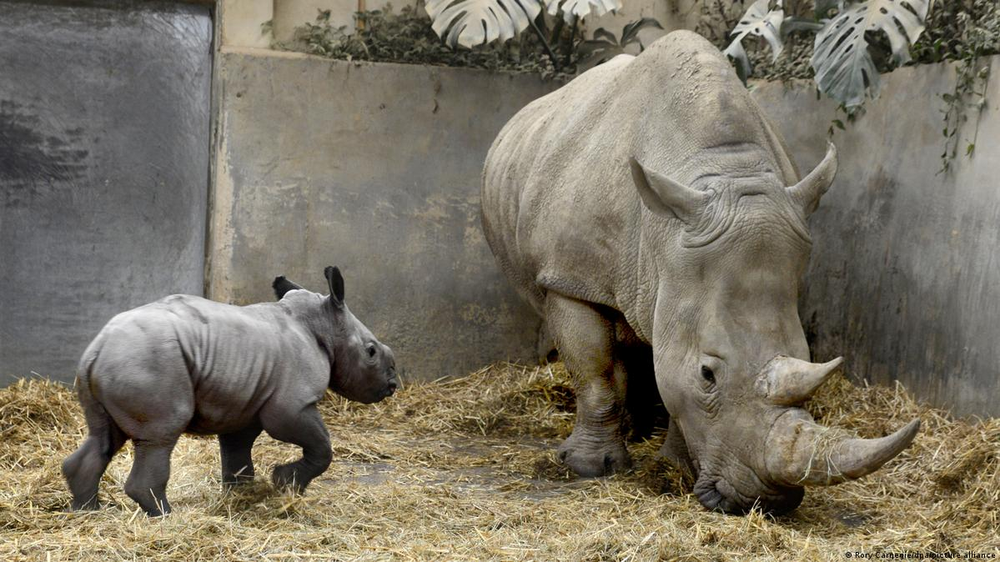

Los félidos (Felidae), erróneamente llamados felinos, son una familia de mamíferos placentarios del orden Carnivora. Poseen un cuerpo esbelto, oído agudo, hocico corto y excelente vista. Son los mamíferos cazadores más sigilosos. La mayoría consume exclusivamente carne e ignora cualquier otra comida que no sea una presa viva. La capturan con sus afiladas garras y suelen matarla de un único y tenaz mordisco en la columna vertebral que conecta el cuello de la presa.
A excepción de los guepardos, todos los félidos pueden retraer las uñas de sus garras dentro de una vaina protectora mientras no las usan.
Hay alrededor de cuarenta especies en esta familia; muchas de las cuales escasean en la actualidad, porque han sido objeto de caza por su piel, para aprovechar partes de su cuerpo, o porque su hábitat está siendo destruido, como pasa con el lince ibérico (Lynx pardinus), el félido en mayor peligro de extinción.
Excepto en Antártida, Oceanía y algunas islas, se los encuentra en todo el mundo.